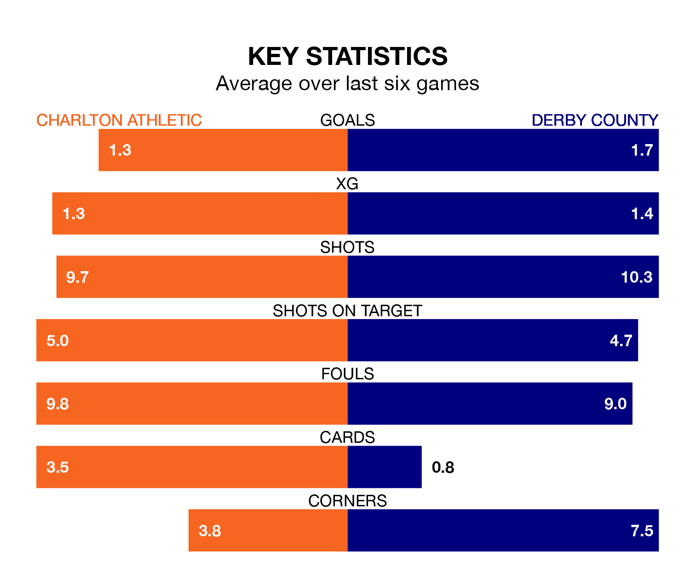

Charlton Athletic are on a terrible run ahead of hosting Derby County at the Valley on Saturday, with just two points collected from their last six games.
The Addicks have picked up two draws and four losses in their last six EFL League One games, and face a Rams side whose last six games have brought three wins and one draw.
With 52 goals in 29 games so far this season, Derby are the league's joint-second-highest scorers with 1.8 goals per game. And they are conceding fewer than average, letting in 28 goals at a rate of 1.0 per game.
Charlton are also above average scorers, with 1.5 goals per game, compared to a league average of 1.3. They have conceded 1.6 goals per game.
In Alfie May, Athletic have the league's most on-form striker so far this season. He has notched 16 goals in 26 appearances.
His goal rate of one every 145 minutes is slightly quicker than that of James Collins, County's top scorer with a goal every 152 minutes, and a total of 13 goals in 29 games.
In the last 10 years, Charlton and Derby have played each other on 10 occasions. Charlton won three of them, Derby six, and they drew once.
On average, the Addicks scored 0.9 goals and the Rams 1.4 in those matches.
Their last meeting was on February 18, when Derby won 2-0 at home.
The Rams are fourth in the table after 29 games, of which they have won 17 and drawn five, earning 56 points.
The Addicks are 14 places behind the visitors in 18th, with seven wins and 10 draws putting them on 31 points.
Charlton's last match was on January 27, a 1-1 draw against Blackpool, with Marvin Ekpiteta getting the goal for the Addicks.
Derby beat Cheltenham Town 2-1 last time out, also on January 27, with Collins and Max Bird on the scoresheet.
Updated: 14:12 (UTC), 02/02/24